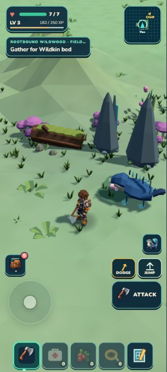
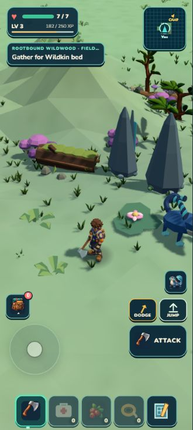
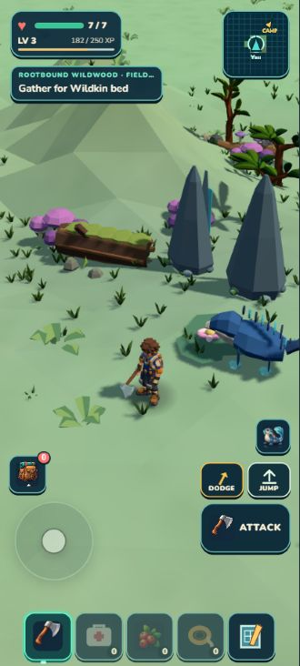

Seven additions bring the retained log-and-mushroom colony, understorey and three canopies into the Grove. Independent review retains the rear-right organic/green corner. This is a partial gain, not a finished room.



These are actual game captures. Only the extra Scout developer panel is hidden; normal HUD remains. Protected storage means this is not a new persistent outing. The companion moves independently between captures.
The existing budget/clearance selection removes three local infill decorations and three outer canopies from this resident window: total residents change from 41 to 42, canopy/collider counts stay at 12/15. Actual canopy ray hits unload/re-enter 3 → 0 → 3. A scripted 8.73 m approach and 8.87 m return completes, with one brief sampled downward step before grounding resumes. Developer/package pose and resident IDs match. All 1,434 tests, verification and ZIP pass.
The first external-low GLB was invisible: that path needs baked parts. The corrected rendered R4 preserves 1,390 triangles and its palette. True baked R1 · Rendered mesh proof.
Chris’s latest direction pauses asset experiments. Next is a whole-region placeholder blockout across all five subregions, establishing shape and feel before refinement. Blockout plan · Independent review · Checkpoint · Local check · V1 status.
{kind=link}